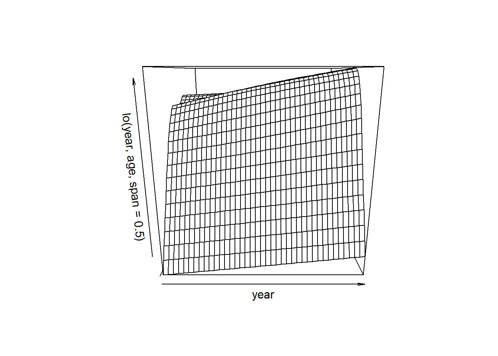

Existen diversas formas de ajustar un modelo lineal de regresión polinómica. Aquí usamos, dentro de lm(), la función poly(), evitando escribir una fórmula larga con potencias de la variable explicativa (véase el anexo Herramientas).
library(ISLR2)fit <-lm(wage ~poly(age, 4), data = Wage)coef(summary(fit))
poly(age, 4) genera un polinomio de cuarto grado en age, con una base de polinomios ortogonales (cada columna es una combinación lineal de las variables age, age^2, age^3 y age^4).
para obtener age, age^2, age^3 y age^4 directamente, en lugar de los polinomios ortogonales, hay que hacer uso del argumento raw = TRUE.
fit2 <-lm(wage ~poly(age, 4, raw = T), data = Wage)coef(summary(fit2))
Estimate Std. Error t value Pr(>|t|)
(Intercept) -1.841542e+02 6.004038e+01 -3.067172 0.0021802539
poly(age, 4, raw = T)1 2.124552e+01 5.886748e+00 3.609042 0.0003123618
poly(age, 4, raw = T)2 -5.638593e-01 2.061083e-01 -2.735743 0.0062606446
poly(age, 4, raw = T)3 6.810688e-03 3.065931e-03 2.221409 0.0263977518
poly(age, 4, raw = T)4 -3.203830e-05 1.641359e-05 -1.951938 0.0510386498
Como se indica en el anexo Herramientas, veremos que la elección de la “base” no afecta al modelo de manera significativa - sí que afecta a las estimaciones de los coeficientes, pero no afecta a los valores ajustados obtenidos.
Predicciones
Ahora creamos una malla de valores para age en la que queremos predicciones, y luego llamamos a la función genérica predict(), especificando que también queremos errores estándar (se = TRUE).
Nota Víctor: más adelante se dibuja el subplot de la derecha (véase el libro).
Nota técnica: Los argumentos mar y oma para par() nos permiten controlar los márgenes del plot, y la función title() crea un título de figura que abarca ambos subplots.
Mencionamos anteriormente que si se produce o no un conjunto ortogonal de funciones base en la función poly() no afectará al modelo obtenido de manera significativa. ¿Qué queremos decir con esto? Los valores ajustados obtenidos en cualquier caso son idénticos:
preds2 <-predict(fit2, newdata =list(age = age.grid), se =TRUE)max(abs(preds$fit - preds2$fit))
[1] 6.842527e-11
Nota Víctor: El dato obtenido se puede considerar 0. No aparece exactamente el valor 0 por la precisión de las predicciones con uno y otro ajuste.
7.1.1.1 Contraste ANOVA
Al realizar una regresión polinomial, debemos decidir el grado del polinomio que se utilizará. Una forma de hacerlo es mediante el uso de contrastes de hipótesis. Vamos a ajustar modelos lineales que van desde el de grado 1 hasta un polinomio de grado 5 y buscaremos determinar el modelo más simple que sea suficiente para explicar la relación entre wage y age. Usamos la función anova(), que realiza un análisis de varianza (ANOVA, usando un contraste F) para probar la hipótesis nula de que un modelo \(\mathcal{M}_1\) es suficiente para explicar los datos frente a la hipótesis alternativa de que se requiere un modelo más complejo \(\mathcal{M}_2\). Para usar la función anova(), \(\mathcal{M}_1\) y \(\mathcal{M}_2\) deben ser modelos anidados (véase el anexo Herramientas). En este caso, ajustamos cinco modelos diferentes y comparamos secuencialmente un modelo con el siguiente (siempre más complejo).
fit.1<-lm(wage ~ age, data = Wage)fit.2<-lm(wage ~poly(age, 2), data = Wage)fit.3<-lm(wage ~poly(age, 3), data = Wage)fit.4<-lm(wage ~poly(age, 4), data = Wage)fit.5<-lm(wage ~poly(age, 5), data = Wage)anova(fit.1, fit.2, fit.3, fit.4, fit.5)
Analysis of Variance Table
Model 1: wage ~ age
Model 2: wage ~ poly(age, 2)
Model 3: wage ~ poly(age, 3)
Model 4: wage ~ poly(age, 4)
Model 5: wage ~ poly(age, 5)
Res.Df RSS Df Sum of Sq F Pr(>F)
1 2998 5022216
2 2997 4793430 1 228786 143.5931 < 2.2e-16 ***
3 2996 4777674 1 15756 9.8888 0.001679 **
4 2995 4771604 1 6070 3.8098 0.051046 .
5 2994 4770322 1 1283 0.8050 0.369682
---
Signif. codes: 0 '***' 0.001 '**' 0.01 '*' 0.05 '.' 0.1 ' ' 1
El p-valor que compara el Model 1 lineal con el Model 2 cuadrático es esencialmente cero (\(<10^{-16}\)), lo que indica que un ajuste lineal no es suficiente. De manera similar, el p-valor que compara el Model 2, cuadrático, con el Model 3, cúbico, es muy bajo (0.0017), por lo que el ajuste cuadrático también es insuficiente. El p-valor que compara los polinomios cúbico y de grado 4, Model 3 y Model 4, es de aproximadamente 5% mientras que el polinomio de grado 5, Model 5, parece innecesario porque su p-valor al compararlo con el Model 4 es 0.37. Por lo tanto, un polinomio cúbico o cuártico parecen proporcionar un ajuste razonable a los datos, no estando justificados los modelos de orden inferior o superior.
En este caso, en lugar de usar la función anova(), podríamos haber obtenido estos p-valores de manera más sucinta explotando el hecho de que poly() crea polinomios ortogonales (véase la función poly() en el anexo Herramientas).
Observe que los p-valores son los mismos y, de hecho, el cuadrado de cada estadístico \(t\) es igual al estadístico \(F\) de la función anova(); por ejemplo:
(-11.983)^2
[1] 143.5923
Sin embargo, el método ANOVA funciona tanto si usamos polinomios ortogonales como si no; también funciona cuando tenemos otros términos en el modelo. Por ejemplo, podemos usar anova() para comparar estos tres modelos:
fit.1<-lm(wage ~ education + age, data = Wage)fit.2<-lm(wage ~ education +poly(age, 2), data = Wage)fit.3<-lm(wage ~ education +poly(age, 3), data = Wage)anova(fit.1, fit.2, fit.3)
Analysis of Variance Table
Model 1: wage ~ education + age
Model 2: wage ~ education + poly(age, 2)
Model 3: wage ~ education + poly(age, 3)
Res.Df RSS Df Sum of Sq F Pr(>F)
1 2994 3867992
2 2993 3725395 1 142597 114.6969 <2e-16 ***
3 2992 3719809 1 5587 4.4936 0.0341 *
---
Signif. codes: 0 '***' 0.001 '**' 0.01 '*' 0.05 '.' 0.1 ' ' 1
Como alternativa al uso de contrastes de hipótesis y ANOVA, podríamos elegir el grado del polinomio mediante validación cruzada, como se explica en el Lab5 Remuestreo.
7.1.1.2 Clasificación
Consideramos la tarea de predecir si una persona gana más de 250.000 $ por año. Procedemos como antes, excepto que primero creamos el vector de respuesta apropiado y luego aplicamos la función glm() usando family = "binomial" para ajustar un modelo de regresión logística polinomial.
fit <-glm(I(wage >250) ~poly(age, 4), data = Wage, family = binomial)
Tenga en cuenta que nuevamente usamos el ‘envoltorio’ I() para crear esta variable de respuesta binaria sobre la marcha. La expresión wage > 250 se evalúa como una variable lógica que contiene TRUEs y FALSEs, que glm() convierte en binario estableciendo TRUE como 1 y FALSE como 0.
Una vez más, hacemos predicciones usando la función predict().
preds <-predict(fit, newdata =list(age = age.grid), se = T)
Calcular ahora los intervalos de confianza es un poco más complicado que en el caso de la regresión lineal. El tipo de predicción predeterminado para un modelo glm() es type = "link", que es lo que usamos aquí. Esto significa que obtenemos predicciones para el logit , o log-odds: es decir, hemos ajustado un modelo de la forma \[ \log\left(\frac{\Pr(Y=1|X)}{1-\Pr(Y=1|X)}\right)=X\beta,\] y las predicciones dadas son de la forma \(X \hat\beta\). Los errores estándar dados también son para \(X \hat\beta\). Para obtener intervalos de confianza para \(\Pr(Y=1|X)\), usamos la transformación \[\Pr(Y=1|X)=\frac{\exp(X\beta)}{1+\exp(X\beta)}.\]
Sin embargo, los intervalos de confianza correspondientes no habrían sido sensatos porque terminaríamos con ¡probabilidades negativas!
Finalmente, el gráfico de la derecha de la Figura 7.1 se hizo de la siguiente manera:
Hemos dibujado los valores de age correspondientes a las observaciones con valores de wage por encima de 250 con marcas grises en la parte superior del gráfico, y aquellos con valores de wage por debajo de 250 se muestran con marcas grises en la parte inferior del gráfico. Usamos la función jitter() para alterar un poco los valores de age para que las observaciones con el mismo valor no se tapen entre ellas. Esto a menudo se llama un ‘rug plot’.
7.1.2 Funciones escalonadas (omitido)
Nota Víctor: Omito esta sección porque considero que desvía la atención del objetivo de conocer las “grandes” herramientas de modelización.
(Se puede consultar en el material original y en la Sección 7.2 del libro)
7.2 Splines
7.2.1 Splines de regresión
Para ajustar unos splines de regresión (regression splines) en R, usamos el paquete splines. En la Sección 7.4 se ve que los splines de regresión se pueden ajustar construyendo una matriz apropiada de funciones base. La función bs() genera la matriz completa de funciones base para splines con el conjunto especificado de nodos (knots). Por defecto, se producen splines cúbicos. La sintaxis para ajustar wage a age usando un spline de regresión es simple:
Aquí tenemos nodos preespecificados con edades 25, 40 y 60. Esto produce un spline con seis funciones básicas. Nota técnica: un spline cúbico con tres nodos tiene siete grados de libertad; estos grados de libertad se usan para la intersección, más seis funciones base.
También podríamos usar la opción df para producir un spline con nodos en los cuantiles uniformes de los datos
dim(bs(age, knots =c(25, 40, 60)))
[1] 3000 6
dim(bs(age, df =6))
[1] 3000 6
attr(bs(age, df =6), "knots")
[1] 33.75 42.00 51.00
En este caso, R elige nodos en las edades 33.75, 42 y 51, que corresponden a los percentiles 25, 50 y 75 de age. La función bs() también tiene un argumento degree, por lo que podemos ajustar splines de cualquier grado, en lugar del grado predeterminado de 3 (que produce un spline cúbico).
Splines naturales
Para ajustar a un spline natural, usamos la función ns(). Aquí ajustamos a uno con cuatro grados de libertad.
age <- Wage$agefit2 <-lm(wage ~ns(age, df =4), data = Wage)pred2 <-predict(fit2, newdata =list(age = age.grid), se = T)plot(Wage$age, Wage$wage, col ="gray")lines(age.grid, pred2$fit, col ="red", lwd =2)
Al igual que con la función bs(), podríamos especificar los nodos directamente usando la opción knots.
7.2.2 Splines de suavizado
Para ajustar un spline de suavizado, usamos la función smooth.spline(). La figura 7.8 se obtuvo con el siguiente código:
Warning in smooth.spline(Wage$age, Wage$wage, cv = TRUE): cross-validation with
non-unique 'x' values seems doubtful
fit2$df
[1] 6.794596
lines(fit, col ="red", lwd =2)lines(fit2, col ="blue", lwd =2)legend("topright",legend =c("16 DF", "6.8 DF"),col =c("red", "blue"),lty =1,lwd =2,cex = .8)
Note que en la primera llamada a smooth.spline(), especificamos df = 16. Luego, la función determina qué valor de \(\lambda\) conduce a 16 grados de libertad. En la segunda llamada a smooth.spline(), seleccionamos el nivel de suavidad por validación cruzada, cv = TRUE; esto da como resultado un valor de \(\lambda\) que produce 6.8 grados de libertad.
7.2.3 Regresión local: loess
Para realizar la regresión local, usamos la función loess().
Aquí hemos realizado una regresión lineal local utilizando intervalos de 0.2 y 0.5: es decir, cada vecindario consta del 20% o el 50% de las observaciones. Cuanto mayor sea el intervalo, más suave será el ajuste. El paquete locfit también se puede usar para ajustar modelos de regresión locales en R.
Dado que este es un modelo de regresión lineal que usa una selección adecuada de funciones básicas, se ha utilizando la función lm().
Para ajustar tipos más generales de GAM, usando splines de suavizado u otros componentes que no se pueden expresar en términos de funciones básicas y luego ajustar usando regresión de mínimos cuadrados, necesitaremos usar el paquete gam en R.
La función s(), del paquete gam, se usa para indicar que nos gustaría usar un spline de suavizado. Especificamos que la función de year debe tener 4 grados de libertad, y que la función de age tendrá 5 grados de libertad. Dado que education es cualitativa, la dejamos como está (se convierte en cuatro variables dummys). Usamos la función gam() para ajustar un GAM usando estos componentes. Todos los términos en (7.16) se ajustan simultáneamente, tomándose en cuenta para explicar la respuesta.
Para obtener la Figura 7.12, simplemente llamamos a la función plot():
par(mfrow =c(1, 3))plot(gam.m3, se =TRUE, col ="blue")
La función genérica plot() reconoce que gam.m3 es un objeto de la clase Gam, e invoca el método apropiado plot.Gam(). Aunque gam1 no es de la clase Gam sino de la clase lm, todavía podemos usar plot.Gam() con él (en lugar de la función genérica plot()). La figura 7.11 se produjo utilizando la siguiente expresión:
par(mfrow =c(1, 3))plot.Gam(gam1, se =TRUE, col ="red")
En estos gráficos, la función de year parece más bien lineal. Podemos realizar una serie de contrastes ANOVA para determinar cuál de estos tres modelos es mejor: un GAM que excluye year (\(\mathcal{M}_1\)), un GAM que usa una función lineal de year (\(\mathcal{M}_2\)), o un GAM que usa una función spline de year (\(\mathcal{M}_3\)).
gam.m1 <-gam(wage ~s(age, 5) + education, data = Wage)gam.m2 <-gam(wage ~ year +s(age, 5) + education, data = Wage)anova(gam.m1, gam.m2, gam.m3, test ="F")
Encontramos que hay evidencia convincente de que una GAM con una función lineal de year es mejor que una GAM que no incluye yearp-value= 0.00014. Sin embargo, no hay evidencia de que se necesite una función no lineal de yearp-value = 0.349. En otras palabras, según los resultados de este ANOVA, se prefiere \(\mathcal{M}_2\).
La función summary() produce un resumen del ajuste gam.
summary(gam.m3)
Call: gam(formula = wage ~ s(year, 4) + s(age, 5) + education, data = Wage)
Deviance Residuals:
Min 1Q Median 3Q Max
-119.43 -19.70 -3.33 14.17 213.48
(Dispersion Parameter for gaussian family taken to be 1235.69)
Null Deviance: 5222086 on 2999 degrees of freedom
Residual Deviance: 3689770 on 2986 degrees of freedom
AIC: 29887.75
Number of Local Scoring Iterations: NA
Anova for Parametric Effects
Df Sum Sq Mean Sq F value Pr(>F)
s(year, 4) 1 27162 27162 21.981 2.877e-06 ***
s(age, 5) 1 195338 195338 158.081 < 2.2e-16 ***
education 4 1069726 267432 216.423 < 2.2e-16 ***
Residuals 2986 3689770 1236
---
Signif. codes: 0 '***' 0.001 '**' 0.01 '*' 0.05 '.' 0.1 ' ' 1
Anova for Nonparametric Effects
Npar Df Npar F Pr(F)
(Intercept)
s(year, 4) 3 1.086 0.3537
s(age, 5) 4 32.380 <2e-16 ***
education
---
Signif. codes: 0 '***' 0.001 '**' 0.01 '*' 0.05 '.' 0.1 ' ' 1
Los p-valores de Anova for Parametric Effects demuestran claramente que year, age y education son estadísticamente muy significativos, incluso cuando solo se supone una relación lineal. Alternativamente, los p-valores de Anova for Nonparametric Effects para year y age corresponden a una hipótesis nula de una relación lineal frente a la alternativa de una relación no lineal. El gran p-valor para year refuerza nuestra conclusión del contraste ANOVA de que una función lineal es adecuada para este término. Sin embargo, hay evidencias muy claras de que se requiere un término no lineal para age.
Podemos hacer predicciones usando el método predict() para la clase Gam. Aquí hacemos predicciones sobre el conjunto completo de datos Wage.
preds <-predict(gam.m2, newdata = Wage)
También podemos usar ajustes de regresión local como bloques de construcción en un GAM, usando la función lo().
gam.lo <-gam(wage ~s(year, df =4) +lo(age, span =0.7) + education, data = Wage)par(mfrow =c(1, 3))plot.Gam(gam.lo, se =TRUE, col ="green")
Aquí hemos utilizado la regresión local para el término age, con un intervalo de 0.7. También podemos usar la función lo() para crear interacciones antes de llamar a la función gam(). Por ejemplo,
Warning in lo.wam(x, z, wz, fit$smooth, which, fit$smooth.frame, bf.maxit, :
liv too small. (Discovered by lowesd)
Warning in lo.wam(x, z, wz, fit$smooth, which, fit$smooth.frame, bf.maxit, : lv
too small. (Discovered by lowesd)
Warning in lo.wam(x, z, wz, fit$smooth, which, fit$smooth.frame, bf.maxit, :
liv too small. (Discovered by lowesd)
Warning in lo.wam(x, z, wz, fit$smooth, which, fit$smooth.frame, bf.maxit, : lv
too small. (Discovered by lowesd)
ajusta un modelo de dos términos, en el que el primer término es una interacción entre year y age, ajustado por una superficie de regresión local. Podemos trazar la superficie bidimensional resultante si primero instalamos el paquete interp.
#library(akima) #aparece en el material original, no funciona desde octubre de 2023library(interp)plot(gam.lo.i)

7.3.1 GAM logístico
Para ajustar una regresión logística GAM, usamos una vez más la función I() para construir la variable de respuesta binaria y establecemos family=binomial.
gam.lr <-gam(I(wage >250) ~ year +s(age, df =5) + education,family = binomial,data = Wage)par(mfrow =c(1, 3))plot(gam.lr, se = T, col ="green")
Es fácil ver que no hay altos ingresos en la categoría < HS:
table(Wage$education, I(Wage$wage >250))
FALSE TRUE
1. < HS Grad 268 0
2. HS Grad 966 5
3. Some College 643 7
4. College Grad 663 22
5. Advanced Degree 381 45
Por lo tanto, ajustamos una regresión logística GAM utilizando todas menos esta categoría. Esto proporciona resultados más sensibles.
gam.lr.s <-gam(I(wage >250) ~ year +s(age, df =5) + education,family = binomial,data = Wage,subset = (education !="1. < HS Grad"))par(mfrow =c(1, 3))plot(gam.lr.s, se = T, col ="green")